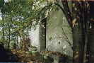

|
Archivio
Storico fotografico
Associazione Culturale Zivido
ottobre 2000
ottobre 1993

ottobre 1993
|
Il
ticchettio monotono e regolare pervade l’abitacolo.
Fermo al semaforo attendo il via libera per immettermi
sulla strada che porta a Viboldone. Scatta il verde
e mi avvio. La strada, dopo una doppia curva a gomito,
comincia a salire, supera la vecchia linea ferroviaria
per poi gettarsi sotto alla nuova dedicata all’alta
velocit�.
E’ una tiepida giornata ottombrina, il cielo �
terso ed il sole illumina la campagna dove gli ultimi
colori estivi contrastano quelli autunnali che si annunciano
densi di sfumature che paiono la tavolozza di un pittore.
La strada, dritta e quasi triste dominata com’�
dall’alta massicciata ferroviaria, dopo poche centinaia
di metri scompare improvvisamente per rispuntare subito
al di l�.
L’asfalto, terminato bruscamente, ha lasciato il
posto allo sterrato, più umano e più sonoro, e davanti
si stagliano i primi edifici dell’antica frazione
di Occhi�.
Ora, sobbalzando per l’irregolarit� del piano,
percorro la storia, infatti davanti agli occhi l'antichissimo
tracciato della strada consolare romana "Aemilia"
si snoda tortuoso e solitario nella silente campagna.
In fondo, sulla mia destra, la visione irreale di una
corona fitta d'alberi alti, verdi e poderosi che paiono
irresoluti ed antichi soldati stretti fra loro a difesa
di un bene prezioso. Un improvviso e forte soffiar di
vento autunnale scompiglia per un attimo fuggente le
loro fronde: compare umile una cappella.
Una sbarra mi impedisce di proseguire, ma sono giunto
alla meta. Il motore tace e subito � silenzio d'intorno,
ma dentro un subbuglio di emozioni velano il mio respiro.
Avverto la sensazione di essere improvvisamente immerso
nella storia; di essere circondato dai fantasmi di uomini
antichi: facoltosi romani intenti ai loro traffici commerciali,
cavalieri e soldati di guerre infinite, viandanti e
pellegrini in cerca di una meta, contadini chini ed
affaticati sui fertili campi, ma anche di insulsi individui
che di questo luogo hanno fatto scempio e lordura.
Salgo i gradini ingombri di sterpaglie e scompaio nel
tempo che fu.
(Pierino Esposti - ottobre 2000)
|


{kind=link}
{kind=link}
{kind=link}